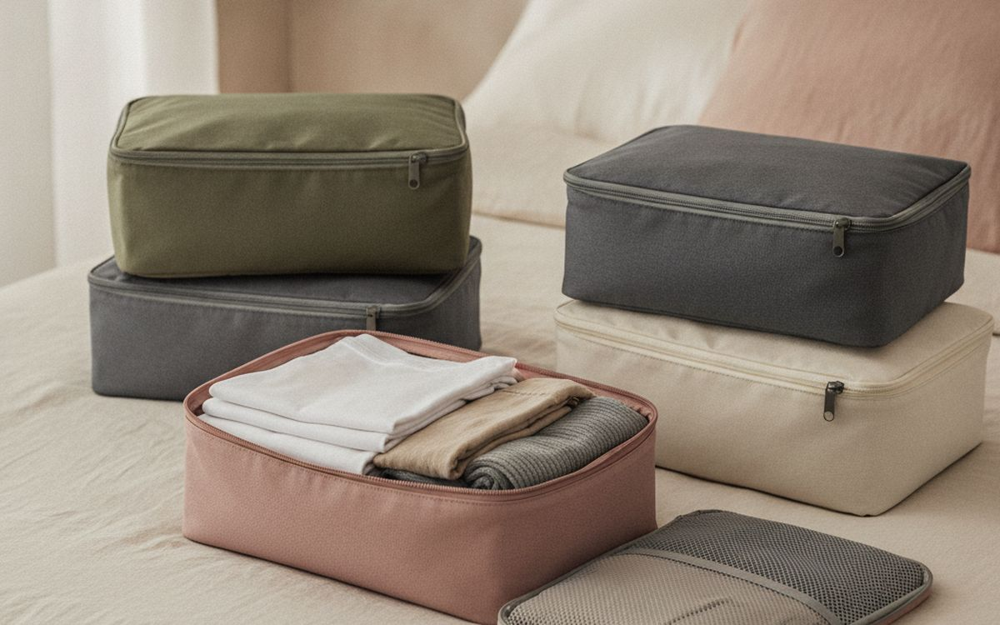
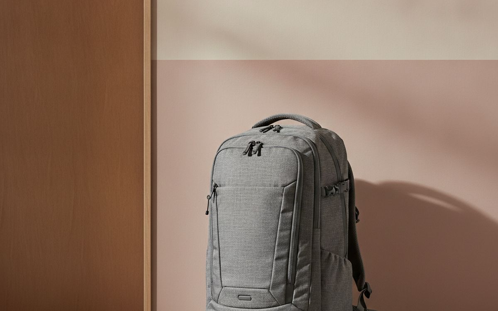
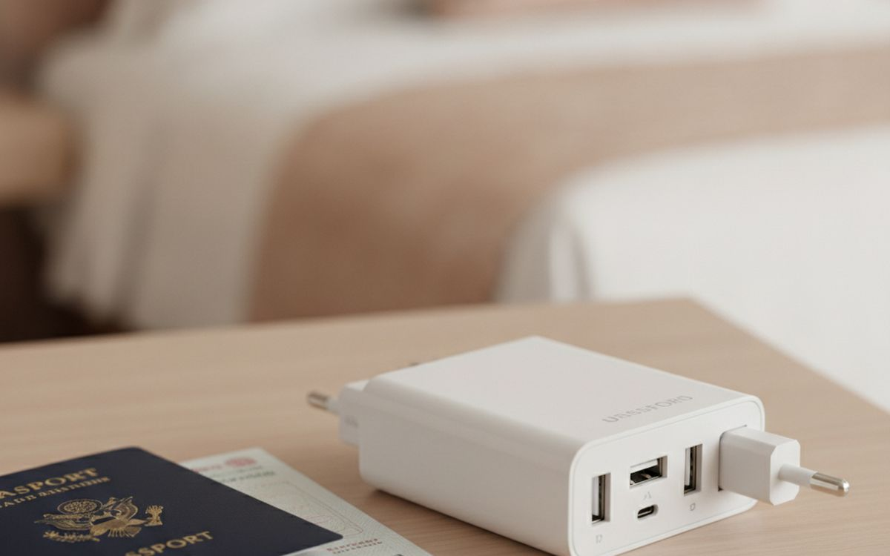
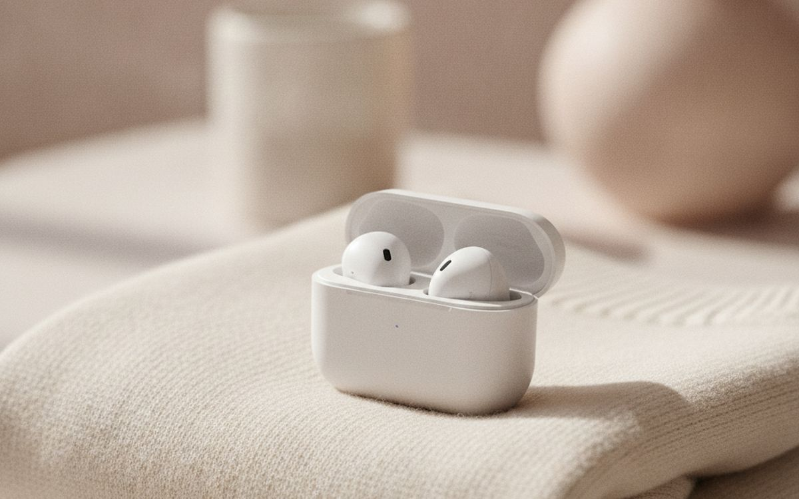
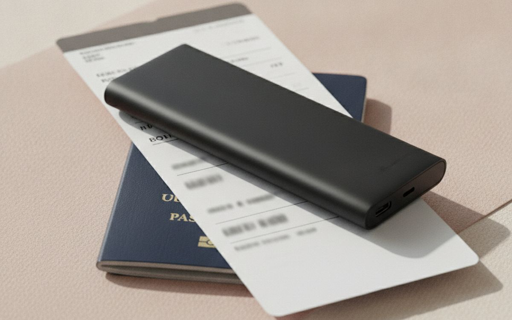
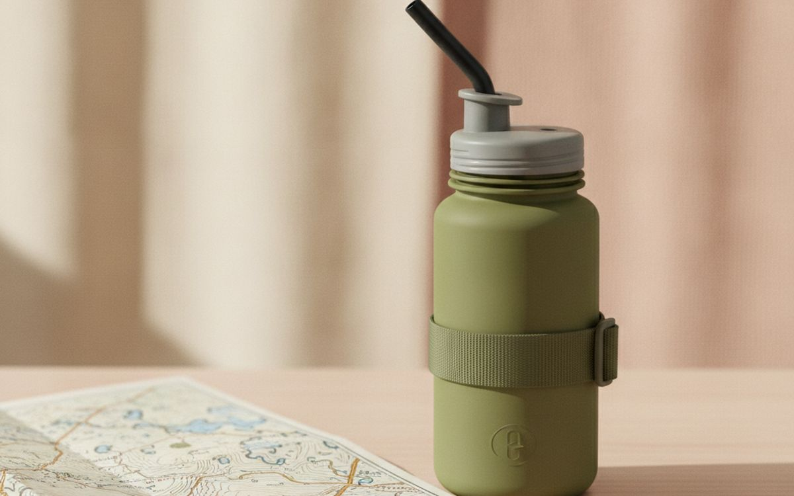
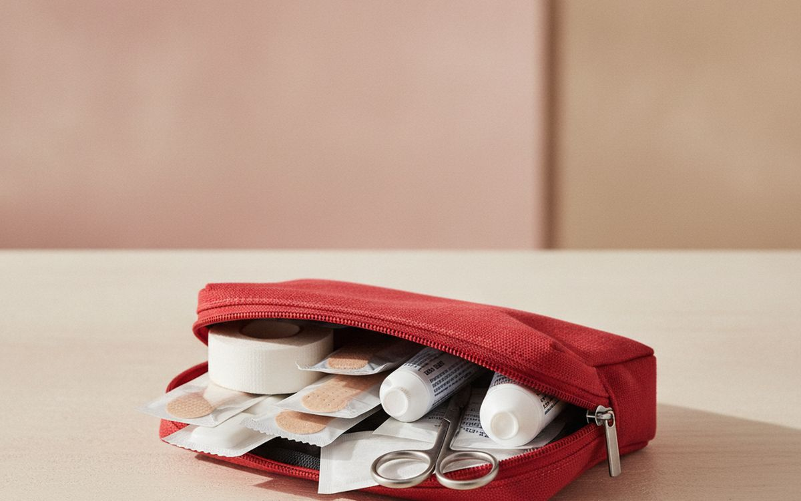
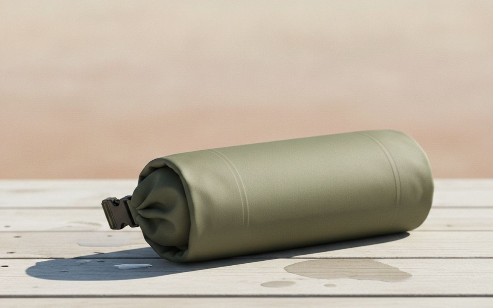
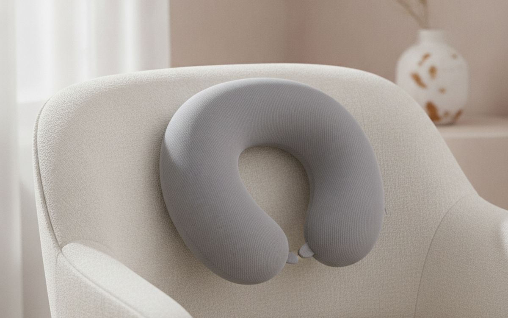
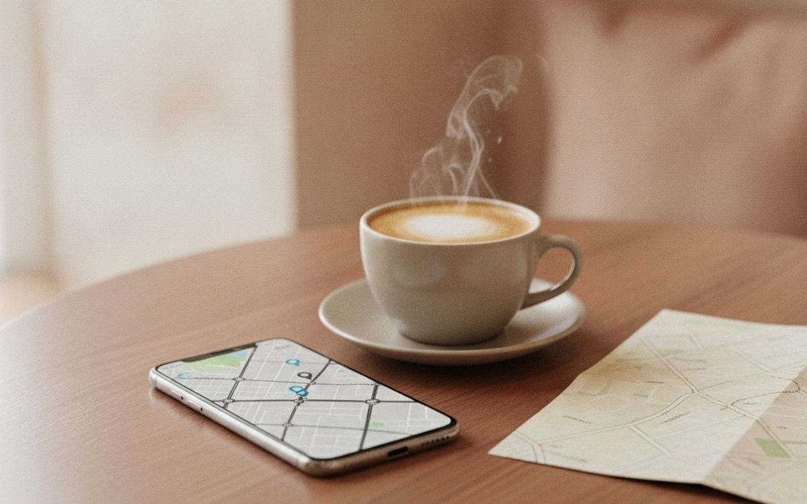

Alles im Gepäck hat seinen Preis – sein Gewicht. Diese zehn Dinge sind es wert – und wir nennen auch die beliebten Artikel, die es nicht sind.
Jeder Gegenstand, den Sie einpacken, hat seinen Preis – bezahlt in Gewicht, Platz im Gepäck und der kleinen Last, auf eine weitere Sache achten zu müssen. Die meisten Reise-Gadgets fallen bei diesem Test durch – sie lösen ein Problem, das Ihnen einmal im Jahr begegnet, und Sie schleppen sie die anderen einundfünfzig Wochen mit sich herum.
Die folgenden Artikel bestehen diesen Test. Einige sind langweilig. Ein paar sind Dinge, die Sie bereits in einer schlechteren Version besitzen, und eines davon ist eine Plastiktüte – uns ist bewusst, dass das keine aufregende Empfehlung ist, aber sie ist nun mal richtig.
Die Preise sind ungefähre Angaben zum Zeitpunkt der Erstellung dieses Artikels. Insbesondere Gepäck wird häufig und stark reduziert – den vollen Preis für einen Koffer zu zahlen, ist fast schon ein Fehler.
Hinweis. Die Links auf dieser Seite sind Affiliate-Links. Wenn Sie darüber kaufen, erhalten wir unter Umständen eine Provision ohne Mehrkosten für Sie. Das beeinflusst weder die Auswahl noch die Reihenfolge dieser Liste.
Wie wir ausgewählt haben
Wir beurteilen Reiseausrüstung nach Gewicht, Haltbarkeit bei der Behandlung durch Fluggesellschaften und danach, bei wie vielen Reisen pro Jahr sie sich tatsächlich einen Platz im Gepäck verdient. Wir stützen uns auf veröffentlichte Tests, Langzeitberichte von Besitzern und die zum Zeitpunkt der Erstellung dieses Artikels geltenden Fluglinienvorschriften. Wir sind nicht mit jedem hier vorgestellten Artikel persönlich gereist. Wo die beliebte Wahl die falsche ist, sagen wir das und erklären den Kompromiss, anstatt sie einfach stillschweigend von der Liste zu streichen.
Auf einen Blick
Die Preise sind Näherungswerte zum Zeitpunkt der Erstellung und ändern sich häufig.
Die Empfehlungen

1
Verändert das Packen von Grund aufPackwürfel
$25–50 for a set
Packwürfel sparen nicht wirklich Platz – die Kompressionsversionen ein wenig, die anderen halten die Dinge hauptsächlich zusammen. Was sie verändern, ist das Erlebnis, aus dem Koffer zu leben. Ihre Kleidung bleibt die ganze Reise über sortiert, anstatt nach dem ersten Morgen zu einem Haufen zusammenzufallen. Sie können ein T-Shirt finden, ohne alles auspacken zu müssen, und das Wiederpacken dauert zwei Minuten statt zwanzig. Bei einer Reise mit mehreren Stopps ist dieser Unterschied enorm. Kaufen Sie lieber wenige größere Würfel als viele kleine und verwenden Sie einen als Wäschesack für Schmutzwäsche.
Warum es hier steht
- Hält eine Tasche während der gesamten Reise organisiert
- Das Wiederpacken ist in zwei Minuten erledigt
- Ein Würfel dient gleichzeitig als Wäschesack
Gut zu wissen
- Die Platzersparnis ist geringer als beworben
- Fügt selbst ein wenig Gewicht hinzu

2
Die Tasche, mit der Sie die Gepäckausgabe überspringenEin 40-Liter-Handgepäcksrucksack oder eine weiche Kabinentasche
$100–250
Nur mit Handgepäck zu reisen, eliminiert die beiden schlimmsten Aspekte des Fliegens: das Warten am Gepäckband und die Möglichkeit, dass Ihr Koffer in einem anderen Land gelandet ist. Eine 40-Liter-Clamshell-Tasche, die sich wie ein Koffer flach öffnen lässt, ist das richtige Format. Bei Toplader-Rucksäcken müssen Sie alles auspacken, um an den Boden zu gelangen. Überprüfen Sie vor dem Kauf die Abmessungen Ihrer Fluggesellschaft und bei Billigfliegern noch einmal, denn diese haben sowohl kleinere Limits als auch weitaus mehr Begeisterung dabei, diese durchzusetzen. Der Kompromiss ist ehrlich: Sie werden das Gewicht auf dem Rücken tragen, anstatt es zu rollen.
Warum es hier steht
- Keine Gepäckausgabe, kein verlorenes Gepäck
- Clamshell-Öffnung funktioniert wie bei einem Koffer
- Passt bei richtiger Größe in die Limits von Billigfluglinien
Gut zu wissen
- Man trägt das Gewicht, anstatt es zu rollen
- Die Größenbeschränkungen für das Handgepäck variieren je nach Fluggesellschaft – vorher prüfen

3
Kaufen Sie einen guten, nicht drei billigeEin universeller Reiseadapter mit USB-C PD
$30–60
Die billigen Adapter, die an Flughäfen verkauft werden, sind diejenigen, die warm werden, den Kontakt verlieren, wenn man das Kabel anstößt, und gelegentlich auf eine Weise versagen, über die man im Hotelzimmer schlafend lieber nicht nachdenken möchte. Ein guter hat eine richtige Sicherung, hält einen Stecker fest und – der Teil, der heute wirklich zählt – verfügt über USB-C Power Delivery mit 30 W oder mehr, sodass er einen Laptop direkt auflädt und ein zweites Ladegerät komplett ersetzt. Beachten Sie, dass fast keiner dieser Adapter die Spannung umwandelt; sie ändern nur die Steckerform. Prüfen Sie, ob Ihr Föhn oder Rasierer für zwei Spannungen ausgelegt ist, bevor Sie sich darauf verlassen.
Warum es hier steht
- Ersetzt auch Ihr Laptop-Ladegerät
- Sichere Sicherung und fester Halt des Steckers
- Ein Gerät für die meisten Länder der Welt
Gut zu wissen
- Wandelt nicht die Spannung um, nur die Steckerform
- Sperrig in einer kleinen Tagestasche

4
Am besten für lange FlügeNoise-Cancelling-Ohrhörer
$120–300
Auf einem langen Flug macht die Unterdrückung des Triebwerksdröhnens den Unterschied zwischen müde und völlig fertig ankommen aus, denn der ständige niederfrequente Lärm ist wirklich ermüdend, auch wenn man ihn nicht bewusst wahrnimmt. Speziell auf Reisen gewinnen In-Ear-Kopfhörer gegen große Kopfhörer: Sie passen in eine Tasche, man kann mit ihnen seitlich an einem Flugzeugsitz gelehnt liegen und kein Kopfbügel stört das Nackenkissen. Over-Ear-Kopfhörer unterdrücken Geräusche etwas besser und haben eine längere Akkulaufzeit. Wenn Sie sie also hauptsächlich für Flüge nutzen und aufrecht schlafen, sind sie eine vernünftige Alternative. Nehmen Sie ein kabelgebundenes Backup für ältere Bordunterhaltungssysteme mit.
Warum es hier steht
- Reduziert die Ermüdung durch Triebwerkslärm
- Passen in die Tasche und funktionieren auch im Liegen auf der Seite
- Kein Konflikt mit einem Nackenkissen
Gut zu wissen
- Weniger Geräuschunterdrückung und Akku als bei Over-Ear-Kopfhörern
- Man verliert leicht einen – sie sind sehr klein

5
Prüfen Sie die Vorschriften der FluggesellschaftEine schlanke Powerbank unter 100 Wh
$30–60
Eine 10.000-mAh-Powerbank ist der praktische Idealfall für Reisen: etwa zwei Handyladungen, dünn genug, um sie zusammen mit dem Handy zu halten, und bequem innerhalb der von den Fluggesellschaften gesetzten Grenzen. Die Regel, die man kennen muss, lautet: Lithium-Akkus müssen im Handgepäck mitgeführt werden, niemals im aufgegebenen Gepäck, und alles über 100 Wh benötigt in der Regel eine Genehmigung der Fluggesellschaft. Fast alle 10.000-mAh-Powerbanks haben etwa 37 Wh, sind also unproblematisch, eine große Laptop-Powerbank aber möglicherweise nicht. Mehrere Fluggesellschaften haben auch die Regeln für die Nutzung oder das Aufladen während des Fluges verschärft – informieren Sie sich vor Ihrer Reise bei Ihrer Fluggesellschaft.
Warum es hier steht
- Etwa zwei Handyladungen im Taschenformat
- Bequem innerhalb der Fluglinien-Limits
- Günstig und weithin verfügbar
Gut zu wissen
- Muss ins Handgepäck, niemals ins aufgegebene Gepäck
- Die Regeln für die Nutzung während des Fluges werden verschärft – vorher prüfen

6
Macht sich in einer Woche bezahltEine nachfüllbare Wasserflasche, die sich falten oder flach verpacken lässt
$20–40
Die Wasserpreise am Flughafen sind das deutlichste Beispiel für einen monopolistischen Markt. Eine Flasche, die Sie leer durch die Sicherheitskontrolle nehmen und auf der anderen Seite auffüllen, umgeht dieses Problem bei jeder Reise, die Sie jemals unternehmen. Eine faltbare Flasche löst das Problem, dass eine starre Flasche im leeren Zustand Platz im Gepäck wegnimmt – sie lässt sich auf Faustgröße zusammenrollen. Die echten Nachteile: Leitungswasser ist nicht überall trinkbar, also informieren Sie sich über Ihr Reiseziel, anstatt es einfach anzunehmen. Und weiche Flaschen sind schwerer richtig zu reinigen, was wichtig ist, wenn Sie etwas anderes als Wasser hineinfüllen.
Warum es hier steht
- Umgeht die Wasserpreise am Flughafen komplett
- Lässt sich im leeren Zustand auf Faustgröße zusammenrollen
- Günstig und bei jeder einzelnen Reise nützlich
Gut zu wissen
- Leitungswasser ist nicht überall trinkbar
- Weiche Flaschen sind schwerer gründlich zu reinigen

7
Das, von dem Sie hoffen, dass es unbenutzt bleibtEin kompaktes Erste-Hilfe- und Medikamenten-Set
$20–45
Nachts um 2 Uhr in einem Land, dessen Sprache man nicht spricht und dessen Verpackungen man nicht kennt, Paracetamol zu kaufen, ist eine wirklich miserable Erfahrung. Und sie ist mit einem Beutel, der zweihundert Gramm wiegt, vollständig vermeidbar. Allein Blasenpflaster rechtfertigen das Ganze bei jeder Reise, bei der man viel zu Fuß unterwegs ist. Bewahren Sie verschreibungspflichtige Medikamente in ihrer original beschrifteten Verpackung auf, führen Sie sie im Handgepäck mit und prüfen Sie vor der Reise die Vorschriften für Ihr Reiseziel – einige gängige Medikamente, einschließlich bestimmter Schmerz- und Erkältungsmittel, sind in bestimmten Ländern eingeschränkt oder verboten.
Warum es hier steht
- Allein Blasenpflaster rechtfertigen das Mitführen
- Vermeidet den nächtlichen Gang zu einer ausländischen Apotheke
- Sehr leicht für das, was es abdeckt
Gut zu wissen
- Einige Medikamente sind in manchen Ländern eingeschränkt
- Muss zwischen den Reisen überprüft und aufgefüllt werden

8
Die billigste Versicherung, die man einpacken kannEin Dry Bag oder eine strapazierfähige Plastiktüte
$0–20
Wir sind uns bewusst, dass dies keine aufregende Empfehlung ist. Sie steht auf der Liste, weil eine einzige auslaufende Shampooflasche, ein unerwarteter Regenguss oder eine Bootsfahrt mit Spritzwasser Elektronik, Dokumente und jedes mitgebrachte Kleidungsstück ruinieren kann. Ein Dry Bag mit Rollverschluss wiegt fast nichts und eliminiert diese ganze Kategorie von reisezerstörenden Ereignissen. Ein stabiler Ziploc-Beutel erledigt achtzig Prozent der gleichen Aufgabe für gar kein Geld, weshalb der Preis bei null beginnt und wir Sie nicht für geringer schätzen würden, wenn Sie sich für diese Option entscheiden.
Warum es hier steht
- Schützt Dokumente und Elektronik vollständig
- Wiegt fast nichts
- Die kostenlose Version funktioniert fast genauso gut
Gut zu wissen
- Wirklich langweilig
- Rollverschlüsse müssen zum Abdichten richtig verschlossen werden

9
Die meisten machen das falschEin Nackenkissen – aber das richtige
$30–70
Das aufblasbare Hufeisen, das an jedem Flughafen verkauft wird, ist so gut wie nutzlos, denn das Problem im Flugzeug ist nicht, dass der Kopf nach hinten fällt – das verhindert bereits der Sitz. Das Problem ist, dass der Kopf zur Seite fällt. Die Kissen, die funktionieren, sind also die festen, die die Lücke zwischen Schulter und Kiefer füllen, oder die umlaufenden Modelle, die das Kinn stützen. Memory-Schaum ist sperriger zu transportieren als aufblasbare Kissen, und das ist der eigentliche Kompromiss. Wenn Sie nur Kurzstrecke fliegen, lassen Sie das Ganze weg und legen Sie stattdessen einen gefalteten Pullover ans Fenster.
Warum es hier steht
- Das richtige Design hilft wirklich beim Schlafen im Sitzen
- Fester Schaumstoff stützt den Kopf beim seitlichen Wegnicken
- Auch in Zügen und Bussen nützlich
Gut zu wissen
- Das übliche aufblasbare Hufeisen funktioniert kaum
- Sperrig zu transportieren für das, was es leistet

10
Die größte Geldersparnis auf dieser SeiteEine eSIM statt Roaming
$5–25 per trip
Dies ist kein physisches Produkt, und genau deshalb gehört es hierher – es ersetzt das umständliche Kaufen einer lokalen SIM-Karte bei der Ankunft und die weitaus schlimmere Angelegenheit, die Roaming-Gebühren Ihres heimischen Anbieters zu bezahlen. Sie kaufen vor dem Flug online einen Datentarif, installieren ihn in etwa zwei Minuten und landen bereits mit einer Internetverbindung. Zwei Dinge sollten Sie vorher überprüfen: ob Ihr Handy tatsächlich eSIM unterstützt, was bei den meisten Modellen der letzten Jahre der Fall ist, und ob es keine Anbietersperre hat. Lassen Sie Ihre normale SIM-Karte für Anrufe und Nachrichten aktiv und nutzen Sie die eSIM nur für Daten.
Warum es hier steht
- Ein Bruchteil der Roaming-Gebühren
- Verbunden, sobald Sie landen
- Nichts Physisches, das man mitnehmen oder verlieren könnte
Gut zu wissen
- Benötigt ein eSIM-fähiges, entsperrtes Handy
- Nur Daten – für Anrufe behalten Sie Ihre normale Nummer
Häufige Fragen
Was ist das am meisten überschätzte Reiseprodukt?
Das aufblasbare Hufeisen-Nackenkissen, gefolgt von Kofferwaagen und Reisegrößen von Dingen, die man einfach in eine kleine Flasche umfüllen könnte. Alle drei werden weitaus häufiger gekauft als benutzt.
Darf ich eine Powerbank mit ins Flugzeug nehmen?
Ja, im Handgepäck, aber niemals im aufgegebenen Gepäck. Unter 100 Wh ist im Allgemeinen ohne Genehmigung in Ordnung, was praktisch alle Powerbanks in Handygröße abdeckt. Einige Fluggesellschaften schränken inzwischen die Nutzung oder das Aufladen während des Fluges ein, also informieren Sie sich bei Ihrer Fluggesellschaft.
Sind Kompressions-Packwürfel besser als normale?
Für sperrige, weiche Gegenstände wie Pullover und Jacken, ja, merklich. Bei Hemden und Hosen ist der Gewinn gering und sie knittern mehr, daher ist ein gemischtes Set normalerweise die beste Antwort.
Nur Handgepäck oder einen Koffer aufgeben?
Nur Handgepäck für Reisen bis zu etwa zehn Tagen, wenn Sie bereit sind, einmal Wäsche zu waschen. Geben Sie einen Koffer auf für Winterreisen, für alles, was eine spezielle Ausrüstung erfordert, oder wenn die Gebühr gering ist und Sie sich einfach keine Gedanken darüber machen wollen.
← Alle Ratgeber
Als Amazon-Partner verdienen wir an qualifizierten Käufen. Preise und Verfügbarkeit entsprechen dem Stand der Veröffentlichung und können sich ändern.